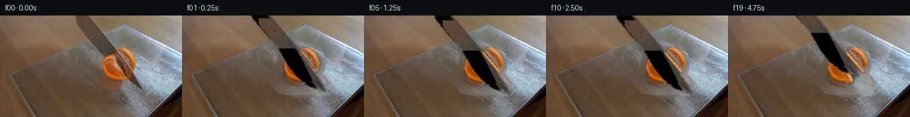

![首帧]()

Round 00
2026-11-05T22:23:02.278197+00:00像素候选变化代码 +476/−0inspection 更新
pixels ad8a23af669e32ee · code 7b0df32a554ffa21
查看本轮 generate.py 真实 diff
--- previous/generate.py
+++ current/generate.py
@@ -0,0 +1,476 @@
+"""PixelWorld case_0040: knife finishes slicing a tangerine half, then lifts.
+
+Layer decomposition of first_frame.png:
+ board/table clean plate (robust polynomial illumination + re-synthesised
+ frosted mottle in occluded zones) -> contact/cast shadows -> two tangerine
+ quarters (sprites with synthesised cut-face fringe) -> steel knife blade
+ (profile-mapped steel sprite with original strip overlay).
+All motion is rigid 2-D translation/rotation; frame 0 is the untouched input.
+"""
+from pathlib import Path
+import numpy as np
+import cv2
+from PIL import Image
+from scipy import ndimage as ndi
+import artifact_io
+
+CASE = Path(__file__).parent
+SRC = np.array(Image.open(CASE / "first_frame.png").convert("RGB"))
+H, W = 144, 256
+YY, XX = np.mgrid[0:H, 0:W]
+RNG = np.random.default_rng(4040)
+
+# ---------------------------------------------------------------- geometry --
+U = np.array([0.66, 0.75]) # blade travel direction (x, y)
+EDGE0 = np.array([[123.0, 0], [158, 42], [162, 50], [170, 60], [177.5, 69],
+ [185, 80], [192, 90], [199, 100], [200.5, 106]])
+SPINE0 = np.array([[97.0, 0], [117, 24], [132, 42], [149, 70], [160, 85],
+ [176, 98], [200.5, 106]])
+EDGE_EXT = np.vstack([[[101.0, -26]], EDGE0])
+SPINE_EXT = np.vstack([[[88.0, -29]], SPINE0])
+BLADE_FULL_POLY = np.vstack([EDGE_EXT, SPINE_EXT[::-1]]) # incl. top extension
+
+
+def shift_poly(poly, s):
+ return poly + s * U
+
+
+def poly_mask(poly, shape=(H, W), dilate=0):
+ m = np.zeros(shape, np.uint8)
+ cv2.fillPoly(m, [np.round(poly).astype(np.int32)], 1)
+ if dilate:
+ m = cv2.dilate(m, np.ones((dilate, dilate), np.uint8))
+ return m.astype(bool)
+
+
+# ----------------------------------------------------------- clean plate ----
+BOARD_QUAD = np.array([[174, 12], [255, 52], [255, 143], [0, 143],
+ [0, 93], [17, 85]])
+
+
+def build_plate():
+ board8 = np.zeros((H, W), np.uint8)
+ cv2.fillPoly(board8, [BOARD_QUAD], 1)
+ board = board8.astype(bool)
+
+ # removal region: union of blade over the full stroke, fruit + shadows
+ remove = np.zeros((H, W), bool)
+ for s in np.arange(-30, 9, 2):
+ remove |= poly_mask(shift_poly(BLADE_FULL_POLY, s))
+ fruit_ell = np.zeros((H, W), np.uint8)
+ cv2.ellipse(fruit_ell, (167, 68), (32, 30), -15, 0, 360, 1, -1)
+ remove |= cv2.dilate(fruit_ell, np.ones((5, 5), np.uint8)).astype(bool)
+ sh = np.array([[126, 76], [150, 72], [186, 74], [198, 86], [206, 98],
+ [200, 112], [172, 114], [138, 108], [124, 94]])
+ shm = np.zeros((H, W), np.uint8)
+ cv2.fillPoly(shm, [sh], 1)
+ remove |= cv2.dilate(shm, np.ones((5, 5), np.uint8)).astype(bool)
+ # keep the real juice specks below the fruit
+ r, g, b = SRC[..., 0].astype(int), SRC[..., 1].astype(int), SRC[..., 2].astype(int)
+ specks = (r > 130) & (r - g > 30) & (g - b > 8) & (YY > 93) & (YY < 105) \
+ & (XX > 145) & (XX < 170)
+ remove &= ~specks
+ known = ~remove
+
+ # erode board quad away from bright rims for fitting
+ inner = cv2.erode(board8, np.ones((5, 5), np.uint8)).astype(bool)
+
+ def fit_field(region, deg):
+ sel = region & known
+ xs = XX[sel].astype(np.float32) / W
+ ys = YY[sel].astype(np.float32) / H
+
+ def basis(x, y):
+ cols = [np.ones_like(x)]
+ for a in range(1, deg + 1):
+ for i in range(a + 1):
+ cols.append(x ** (a - i) * y ** i)
… diff truncated; 389 more lines …